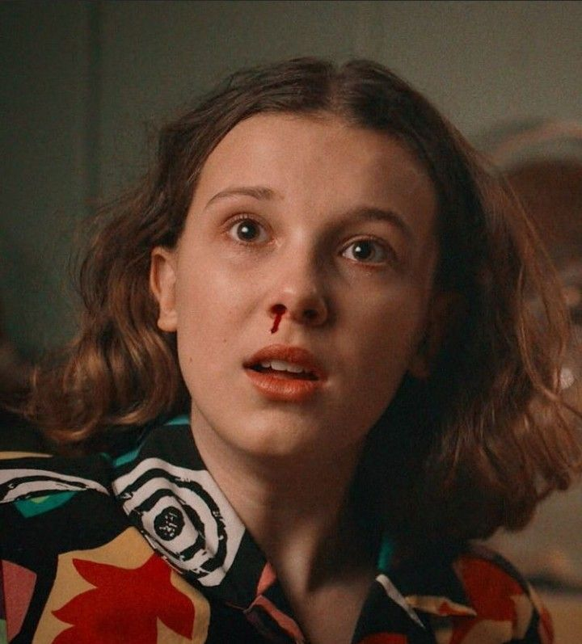
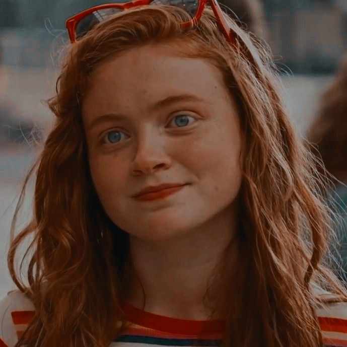
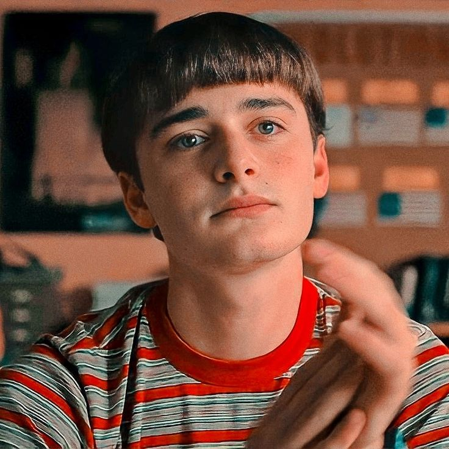
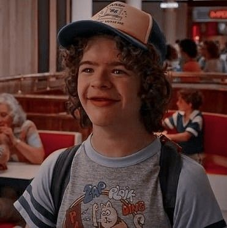
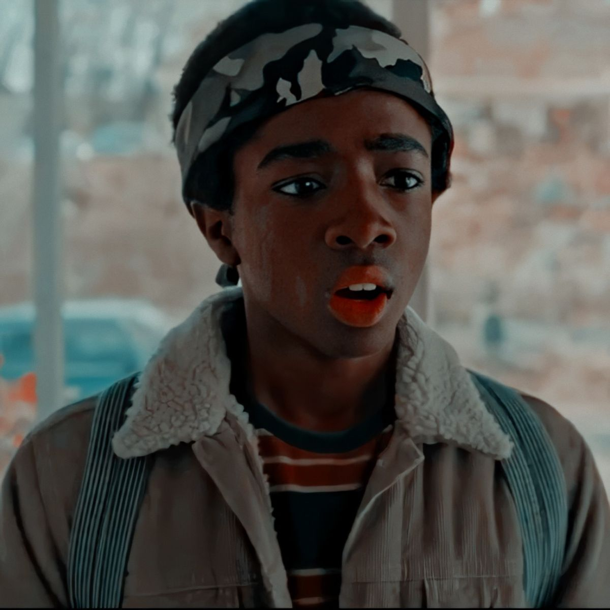

-
Eleven
Na série nasceu em 1971, tinha na primeira temporada, 12 anos, na quinta temporada Eleven terá 15 anos.
-
Max
Na série nasceu em 1971, tinha na primeira temporada 12 anos,na quinta temporada Max terá 15 anos.
-
Will
Na série nasceu em 1971, tinha na primeira temporada 12 anos, na quinta temporada Will terá 15 anos.
-
Mike

Na série nasceu em 1971, tinha na primeira temporada 12 anos, na quinta temporada Mike terá 15 anos.
-
Dustin
Na série nasceu em 1971, tinha na primeira temporada 12 anos, na quinta temporada Dustin terá 15 anos.
-
Lucas
Na série nasceu em 1971, tinha na primeira temporada 12 anos, na quinta temporada Lucas terá 15 anos.